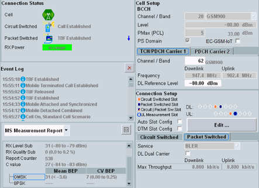

Signaling View
The signaling view shows status information and information derived from the uplink signal to the left and the most important settings to the right. All settings in this view can also be accessed via the configuration dialog.
For the shortcut softkeys, refer to "Using the Shortcut Softkeys".

GSM signaling view
For descriptions of the individual areas of the view, refer to the subsections.
Contents